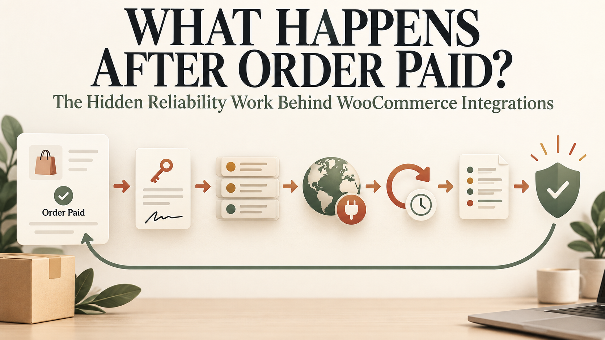

What does “order paid” actually guarantee?
It confirms a financial event reached a successful state. It does not guarantee that inventory was reserved, an external supplier accepted the order, a digital service was activated or a customer received what they bought.
For a basic shop, the steps after payment may be simple. For a WooCommerce site connected to logistics, airtime, subscriptions, bookings or another company’s API, those steps form a distributed workflow. Every boundary can fail independently.
An integration should not depend on the thank-you page or a browser redirect. Customers close tabs, payment methods confirm asynchronously and frontend requests can be replayed.
Use a trusted server-side order state or payment event. The exact WooCommerce hook depends on the business and gateway. A workflow may react when payment is completed, when an order enters processing or when a specific gateway confirms settlement. The implementation should be explicit about which state means “safe to fulfil.”
Do not assume all paid orders follow one identical path. Virtual products, downloadable products, bank transfers and custom gateways can produce different status transitions.
The function attached to the WooCommerce event should validate the order, create a durable fulfilment job and return. It should not hold the checkout request open while calling a slow third-party API.
WordPress and WooCommerce commonly use Action Scheduler for background work. It provides a traceable queue for scheduled tasks and is already used by many extensions. A queue allows the site to retry temporary failures without asking the customer to pay again.
The job payload should contain stable identifiers, not an uncontrolled copy of every order field. Store the order ID, fulfilment type, version and a unique business key. Load current details securely when the worker runs.
WooCommerce hooks can run more than once. Administrators can change an order status manually. Workers can restart. HTTP requests can time out after the remote provider has already completed the action.
Before sending a command, create a fulfilment record with a unique constraint for the order and operation. Reuse a stable idempotency key on retries. If the provider supports idempotency, send it. If the provider does not, use its transaction lookup endpoint before repeating an uncertain request.
A boolean order meta field such as _sent_to_provider = yes is rarely enough. It does not explain whether the provider accepted, rejected or partially completed the request.
Use states such as queued, sending, accepted, confirmed, retrying, failed and manual_review. Record the provider reference and each attempt.
Some supplier APIs use shared-secret HMAC signatures. Others use RSA signatures, OAuth or signed JWTs. The difficulty is often not the cryptographic primitive. It is matching the provider’s exact canonicalization rules.
Small differences matter: field order, whitespace, character encoding, timestamps, line endings, base64 variants and whether the signature covers the raw body or a normalized string.
Store private keys and API secrets outside public source code. Limit file permissions and administrative access. Never write secrets or complete authorization headers to logs. Build a safe diagnostic mode that records request IDs, timestamps, hashes and redacted payloads.
If the provider requires IP allowlisting, confirm the actual outbound IP used by the web server or proxy. A site’s public inbound address is not automatically its outbound address. If hosting cannot guarantee a stable egress IP, use an appropriate fixed-egress service or hosting arrangement.
An HTTP 200 does not always mean the business operation completed. Some APIs return application errors inside a successful HTTP response. Others acknowledge receipt and finish later.
Parse both transport and business status. Validate the response schema. Store the provider transaction ID. If the operation remains pending, schedule a status check or wait for a signed callback.
Likewise, an HTTP timeout does not prove failure. Mark the attempt uncertain, query the provider and retry only when it is safe.
When a provider calls WooCommerce back, verify the signature against the raw request, enforce an acceptable timestamp window if supported and record the provider event ID before processing.
Return quickly and move heavy work to the queue. Duplicate callbacks should not create duplicate fulfilment. Out-of-order events should not move a confirmed order backward without a valid reason.
WooCommerce’s own webhook documentation notes that webhooks can be automatically disabled after repeated unsuccessful deliveries. That is a useful reminder: delivery health must be monitored rather than assumed.
Retry connection timeouts, rate limits and temporary provider failures with exponential backoff and jitter. Do not repeatedly send requests that fail because of invalid customer data, unsupported products or bad credentials.
Define a maximum attempt count and a manual-review state. Notify the appropriate team with enough context to act. A customer should not need to discover the failure before the business does.
Action Scheduler logs, WooCommerce order notes and a dedicated integration log can complement one another. Customer-visible order notes should remain understandable. Deep technical information belongs in restricted operational logs.
Reliable automation still needs a human recovery interface. An authorized administrator should be able to see the current fulfilment state, the last provider response, the safe next action and whether a retry could create a duplicate.
Useful actions may include refresh status, retry safely, mark for refund, attach a provider reference or close after verified manual fulfilment. Every manual action should be audited.
End-to-end testing should cover successful payment and fulfilment, but also:
The goal is not merely to see a green success message. It is to prove the workflow reaches a correct and explainable state under failure.
A custom plugin may contain the code, but reliability comes from the whole design: trusted triggers, durable jobs, idempotency, secure authentication, verified callbacks, bounded retries, reconciliation, monitoring and operator recovery.
That is what happens after “order paid.” The customer sees one line. The system must make that line true.
I build and stabilize WordPress, WooCommerce and custom API integrations, including payment-triggered workflows, signed requests, background queues and operational recovery. Email hello@massoda.me or contact me on WhatsApp.